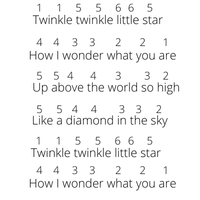
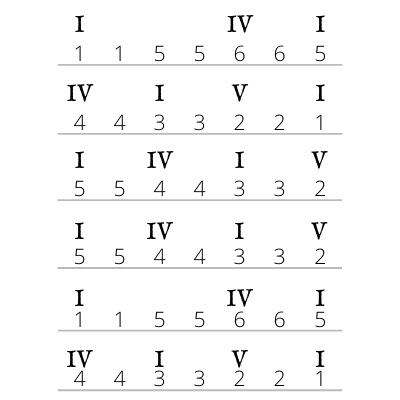
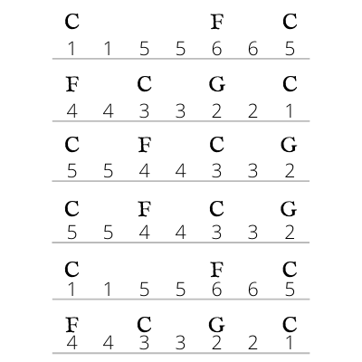
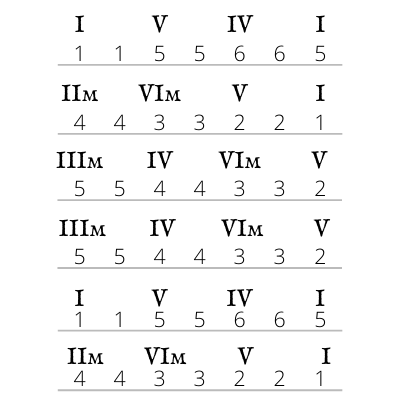
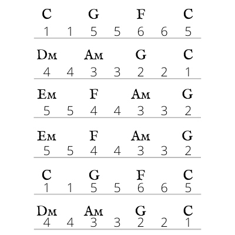

How to Add Chords to a Melody
Imagine a musician singing a song and adding chords on an acoustic guitar. What chords are they playing? How do they pick which chords to play? Why do those chords fit with the melody? You might try to answer this question yourself. Below I’ll explain how this works.
Here is the melody for Twinkle Twinkle Little Star, written in numbers, so you can play it on any major scale:
Try playing this, to make sure you understand the major scale. If it sounds right, we can start adding chords. How do we decide which chords to add? The simplest and most common technique is to use chords that have the melody note in them. The first note in this song is “one” (the first note of the major scale you are using). There are three chords in the major scale that have this note in them: the one-chord, the four-chord, and the six-chord. If we think of the “one, three, five” pattern of each of these chords, we see that the one-chord uses the first note of the scale as the first note, or root, of the chord (no surprises there). The four-chord has the first note of the scale at the top of the chord, the “fifth” of the chord. The six-chord uses the first note of the scale as the middle note in the chord, the “third.” (If this is confusing, review Chords in the Major Scale). Which of these three chords do you want to use? Feel free to experiment with this if you can on the piano, and decide for yourself. Below, I’ve written out the whole song using what I think is the most common way of adding chords to this song, using roman numerals for chord symbols.
You’ll see that I only used the major chords within the major scale: the one, four and five chords. The one-chord has notes one, three, and five from the scale, so whenever there is a one, three, or five in the melody, I used the one-chord. Whenever there was a six or a four in the melody, I used the four-chord, because “four” is the root of this chord and “six” is the third. Whenever there was a two in the melody, I used the five-chord, because “two” is the fifth of this chord. Below, I’ll write this out again, but using chords from the C major scale, so you can play the melody and chords in C major.
And here is a recording of this on piano:
I believe this will sound familiar to you because this is the simplest way of adding chords to this song. Let’s try some different chords. Remember, for each note in the melody, there are three options for chords that contain that note. Here’s another example of how you might harmonize Twinkle Twinkle Little Star:

In this accompaniment, I added the minor chords within the major scale: the two-, three-, and six-chord. Again, every time I added a chord, it was when the melody was on one of the three notes in the chord. However, I didn’t just do this randomly, I kept certain things the same as the simpler example. For instance, I started and ended on the one-chord. This is very important for establishing the key of the song. The melody starts and ends on the first note of the scale, establishing that note as “home base,” and making sure people experience the emotional qualities of being in the major scale. The harmony follows this pattern so the listener still has a strong feeling of landing on “home base” at the end of the song. I encourage you to experiment with ending on the four-chord, or the six-chord, to see how that sounds (those chords also have the first note of the scale in them).
The vast majority of music has a melody and chords that fit together in this way. Some songwriters do it consciously, and some do it intuitively. If they write the melody first, the notes in the melody provide clues for which chords to use. If they write the chords first, the chords suggest which notes to use for the melody.
It’s usually not as simple as Twinkle Twinkle Little Star, however. In that example, every single note in the melody was part of the underlying chord. Usually, melodies are more complex than this, and the chords only fit with the loudest and longest notes in the melody. There might be some notes in the melody that don’t fit with the underlying chord, but those notes are short enough that you don't notice the clash. For example, in “Mary Had a Little Lamb,” the second syllable of "Mary" is a note that doesn’t fit the chord, but the song quickly goes to the next note, which does fit the chord.
Harmony Ear Training Exercise 3: Adding Chords to a Melody
Try adding chords to other melodies, using what you’ve learned so far in this chapter. Nursery rhymes like the ones I listed in Melody Ear Training Exercise 2 are a good place to start, but many other songs will also work. Learn the melody first, and then add chords that you think might fit. If you can, try to play or sing the melody at the same time as playing the chords, or get a friend to play the melody while you play the chords so you can hear how they sound. Try to find chords that sound “right” to you. Eventually, this process can become so easy that you can add chords to a melody in real-time, without practicing the song first. When a spontaneous song breaks out at a party, I enjoy grabbing the nearest instrument and adding chords.